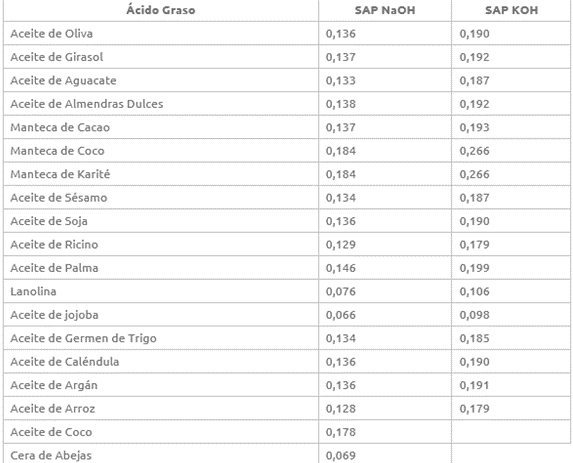
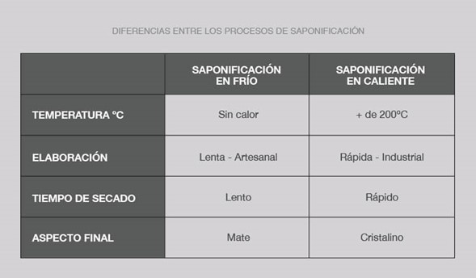

Biología
Aplicación del método científico, por qué la elaboración de estos jabones ayuda al medio ambiente, etc.
Toda la información que necesitas saber sobre los jabones de aceite reciclado.
Toda la información sobre los jabones
Aplicación del método científico, por qué la elaboración de estos jabones ayuda al medio ambiente, etc.
Fórmula de los jabones + explicación de la saponificación.
La elaboración de la página web con código HTML.
¿Sabías que un solo litro de aceite puede llegar a contaminar hasta mil litros de agua, dejar estéril la tierra y acabar con muchas vidas?
¡Los jabones Soda&Oil buscan reciclar ese aceite tan dañino y darles un nuevo y mejor uso!
 (1)-PhotoRoom (1).png)
Necesitaremos 3 sencillos ingredientes:
Sosa cáustica (para jabón duro, si quieres tener jabón líquido utiliza Sosa potásica), cualquier aceite de cocina que tenga índice de saponificación y agua.
Calcula tus ingredientes con la calculadora de mendrulandia: https://calc.mendrulandia.es/?lg=es
Si lo quieres calcular por ti mismo, utiliza esta tabla:

Calcular la sosa:
Cantidad en gr de aceite * el índice de la tabla que utilice tu aceite.
En caso de que sean 2 o varios aceites hacemos lo siguiente:
gr aceite1 * índice + gr aceite2 * índice = gr de sosa
Ahora, debemos calcular el agua:
por cada 420gr de aceite, son 135gr de agua.
aplicamos la regla de 3: si por ejemplo, tienes 1,200gr de aceite y 135 de sosa, entonces:
1200gr * 135gr / 420 = 385gr de agua.
1) Pese el aceite usado según receta.
2) Coloque los ingredientes en un recipiente de cerámica, vidrio resistente al fuego o de acero inoxidable.
Apague el fuego. el aceite debe estar templado a una temperatura cercana a los 30º, lo que nunca haremos será hervir el aceite. Remueva de vez en cuando.
3) Pese la soda cáustica, según receta y no la junte con ningún ingrediente de momento.
4) Pese el agua (del tiempo o tibia), según receta, y no la junte que ningún ingrediente anterior.
5) Con protección para las manos, vierta en el agua la soda cáustica y remueva con una cuchara (de madera sin barnizar, de acero, de hierro, NUNCA ALUMINIO), durante unos segundos hasta que se disuelva la sosa.
6) Añada la solución anterior (soda + agua) al aceite y remueva con cuidado.
7) Remueva intermitentemente hasta que la mezcla se espese, hasta el punto en que pueda hacer gotear un poco de jabón desde el reverso de la cuchara y deje una línea dibujada en la superficie de la mezcla. Esto es lo que se llama “cuajo”
8) A continuación vierta la mezcla en un molde engrasado previamente.
9) Después de un tiempo (dependiendo si se hace frío o caliente), podrá sacarlo fuera del molde y cortarlo. Ponga el jabón sobre un papel de embalaje, en un lugar aireado, fresco y seco.

La sosa cáustica es un producto con un pH muy alto, y por tanto muy corrosiva. Para realizar un jabón apto para uso dermocosmético debemos asegurar que toda la sosa cáustica quede neutralizada con los aceites, y para asegurar que no queda ningún rastro de sosa cáustica, (o hidróxido de sodio) será necesario echar más aceite del que indica la tabla (o menos sosa). A esto se le conoce como un sobreengrasamiento. Quedarán jabones más hidratantes, ya que tendrán una cantidad de aceite sin saponificar. También es importante verificar el nivel de pH del jabón obtenido para comprobar que el pH no sea dañino para la piel.
El grado de sobreengrasamiento va a definir el tipo de jabón: para pieles secas se utiliza un sobreengrasamiento del 10-12% y para pieles grasas menor, del 7-8%.
La fórmula para el jabón de aceite de uso cosmético varía según el nivel de sobreengrasamiento.
Para evitar que el aceite que nos va a quedar en el jabón degrade, utilizamos unas gotas de vitamina E, que es antioxidante.
Para jabones de lavadora, no es necesario realizar este sobreengrasamiento